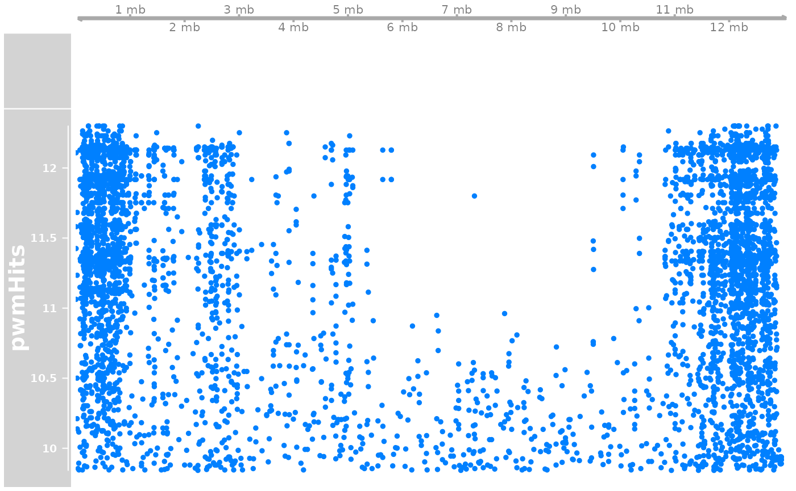

knitr::opts_chunk$set(cache = TRUE)Introduction
Search for motifs in regions near genomic breaks. By default the computations that take time are loaded from R objects. The source code to generate them is only executed when the object files can not be found.
Short summary
Motifs found in isolated regions are made of one or two stretches of As (or Ts when found in reverse-complement). Typical example: nrAAAwnnnnrAAAn. The same motifs are found in breakpoint regions, with the addition of species-specific motifs such as GsCsCkwmGsGsC (Okinawa) or GCT..GCT (North). In addition to this, other species-specific palindromic motifs are enriched in breakpoint regions flanking inversions, such as CCTGA.TCAGG in the Okinawan genome and nGAGGCmACGmsCGTTCn or nACGCyCryTCATTCTwTy in Northern genomes.
This search is intuition-driven and not exhaustive.
Load pacakges
Core packages that provide functions we use a lot.
library('OikScrambling') |> suppressPackageStartupMessages()
genomes <- OikScrambling:::loadAllGenomes(compat = F)
annots <- OikScrambling:::loadAllAnnotations() |> suppressWarnings()
load("BreakPoints.Rdata")
library('ggplot2') |> suppressPackageStartupMessages()
requireNamespace("ggseqlogo")## Loading required namespace: ggseqlogo
requireNamespace("JASPAR2020") |> suppressPackageStartupMessages()
library("rGADEM") |> suppressPackageStartupMessages()Motif searches
GADEM’s documentation states:
The background sequences are simulated using the [a,c,g,t] frequencies in the input sequences, with length matched between the two sets. The background sequences are used as the random sequences for assessing motif enrichment in the input data.
# Pass genome information through metadata
getSeq_ <- function(x) {
seqs <- getSeq(x)
genome(seqs) <- unique(genome(x))
seqs
}
# Note that GADEM crashes on sequences longer than ~48 kbp.
# Slow !
doGadem <- function(seqs) {
seqs <- seqs[width(seqs) < 48000]
bsgenome_name <- genome(seqs@metadata$seqinfo) |> unique()
bsgenome_obj <- BSgenome::getBSgenome(bsgenome_name)
GADEM(seqs, verbose=1, genome=bsgenome_obj)
}
gadems <- SimpleList()Isolated alignments
Aligned regions that do not coalesce into collinear regions are relatively depleted in genes, and show no enrichment of exons versus introns. They are also depleted in repeats, and are mildly enriched in CNEs (see vignette("GenomicFeatures", package = "OikScrambling") for details). Altogether, they can not be summarised in one feature. So let’s see if there are motifs enriched there.
isolAln_seqs <- sapply(gbs[1:15], \(gb) gb[gb$nonCoa] |> getSeq_()) |> SimpleList()
sapply(isolAln_seqs, length)## Oki_Osa Oki_Bar Oki_Kum Oki_Aom Oki_Nor Osa_Oki Osa_Bar Osa_Kum Osa_Aom Osa_Nor
## 4646 4435 2993 4586 4578 4620 1757 4526 2791 2321
## Bar_Oki Bar_Osa Bar_Kum Bar_Aom Bar_Nor
## 4321 1732 4346 1853 3882
if(!file.exists("gadems.alnNonCoa.Rds")) {
gadems$isolAln <- BiocParallel::bplapply(isolAln_seqs, doGadem) |> SimpleList()
saveRDS(gadems$isolAln, file = "gadems.alnNonCoa.Rds")
} else {
# File names still follow old nomenclature: isolated ~ aligned non-coalesced
gadems$isolAln <- readRDS("gadems.alnNonCoa.Rds")
}Breakpoint regions
There regions are not aligned and not within a collinear region.
## Oki_Osa Oki_Bar Oki_Kum Oki_Aom Oki_Nor Osa_Oki Osa_Bar Osa_Kum Osa_Aom Osa_Nor
## 8821 8515 4119 8848 8854 8815 4034 8755 4063 5161
## Bar_Oki Bar_Osa Bar_Kum Bar_Aom Bar_Nor
## 8484 4008 8515 4129 5214
if(!file.exists("gadems.unmap.Rds")) {
gadems$brkReg <- BiocParallel::bplapply(brkReg_seqs, doGadem) |> SimpleList()
saveRDS(gadems$brkReg, file = "gadems.unmap.Rds")
} else {
gadems$brkReg <- readRDS("gadems.unmap.Rds")
}Unaligned regions near inversions
I wanted to search search for motifs near inversions to see if they can lead to an explanation. Here I do not discriminate between breakpoint region or bridge region among unaligned regions. Maybe I should…
See vignette("Inversions", package = "OikScrambling") for details on inversion.
Isolate the left-side gaps in inversions
inv.lgaps <- sapply(coa, leftInversionGaps) |> SimpleList()
inv.lgaps_seqs <- sapply(inv.lgaps[1:15], getSeq_) |> SimpleList()
sapply(inv.lgaps_seqs, length)## Oki_Osa Oki_Bar Oki_Kum Oki_Aom Oki_Nor Osa_Oki Osa_Bar Osa_Kum Osa_Aom Osa_Nor
## 669 675 96 665 591 669 319 678 69 274
## Bar_Oki Bar_Osa Bar_Kum Bar_Aom Bar_Nor
## 666 315 685 315 22
if(!file.exists("gadems.inv.lgaps.Rds")) {
gadems$inv.lgaps <- BiocParallel::bplapply(inv.lgaps_seqs, doGadem) |> SimpleList()
saveRDS(gadems$inv.lgaps, file = "gadems.inv.lgaps.Rds")
} else {
gadems$inv.lgaps <- readRDS("gadems.inv.lgaps.Rds")
}Inversions
invRegions <- sapply(coa[1:15], \(gr) filterInversions(flagInversions(gr))) |> SimpleList()
inv_seqs <- sapply(invRegions, getSeq) |> SimpleList()
sapply(inv_seqs, length)## Oki_Osa Oki_Bar Oki_Kum Oki_Aom Oki_Nor Osa_Oki Osa_Bar Osa_Kum Osa_Aom Osa_Nor
## 670 675 105 665 591 671 321 678 73 275
## Bar_Oki Bar_Osa Bar_Kum Bar_Aom Bar_Nor
## 667 319 686 319 24
# sapply(inv_seqs, length)
# if (!file.exists("gadems.invs.Rds")) {
# gadems$invs <- BiocParallel::bplapply(inv_seqs, doGadem) |> SimpleList()
# saveRDS(gadems$inv, file = "gadems.invs.Rds")
# } else {
# gadems$invs <- readRDS("gadems.invs.Rds")
# }Promoters
#prom_seqs <- sapply(annots[1:3], \(gb) suppressWarnings(trim(promoters(gb)))) |>
# sapply(getSeq_) |> SimpleList()
#sapply(prom_seqs, length)
#if (!file.exists("gadems.proms.Rds")) {
# gadems$proms <- BiocParallel::bplapply(prom_seqs, doGadem) |> SimpleList()
# saveRDS(gadems$proms, file = "gadems.proms.Rds")
#} else {
# gadems$proms <- readRDS("gadems.proms.Rds")
#}Introns
#intron_seqs <- sapply(annots[1:3], GenomicFeatures::intronicParts) |>
# sapply(getSeq_) |> SimpleList()
#sapply(intron_seqs, length)
#if (!file.exists("gadems.introns.Rds")) {
# gadems$introns <- BiocParallel::bplapply(intron_seqs, doGadem) |> SimpleList()
# saveRDS(gadems$introns, file = "gadems.introns.Rds")
#} else {
# gadems$introns <- readRDS("gadems.introns.Rds")
#}Summary
Number of motifs found
## isolAln brkReg inv.lgaps
## Oki_Osa 2 3 6
## Oki_Bar 2 2 5
## Oki_Kum 2 2 2
## Oki_Aom 2 4 7
## Oki_Nor 2 3 5
## Osa_Oki 2 2 5
## Osa_Bar 2 2 6
## Osa_Kum 2 2 7
## Osa_Aom 1 3 4
## Osa_Nor 2 3 4
## Bar_Oki 2 5 5
## Bar_Osa 2 2 4
## Bar_Kum 2 2 4
## Bar_Aom 2 3 5
## Bar_Nor 2 4 2Display
Service functions.
showAllMotifs <- function(gadems) {
sapply(names(gadems), \(name) {
sapply(seq_along(gadems[[name]]@motifList), \(n) {
gadems[[name]][[n]]@consensus
})
})
}
plotAllMotifs <- function(gadems) {
for (curObjName in names(gadems)) {
for (n in seq_along(gadems[[curObjName]]@motifList)) {
p <- plotOneMotif(gadems[[curObjName]][[n]], curObjName)
print(p)
}
}
}
plotOneMotif <- function(gadem, pairName = NULL, range = NULL) {
if(is.null(range)) {
pwm <- rGADEM::getPWM(gadem)
consensus <- gadem@consensus
} else {
pwm <- rGADEM::getPWM(gadem)[,range]
consensus <- gadem@consensus |> subseq(min(range), max(range))
}
title = paste0("Motif consensus: ", consensus)
if(!is.null(pairName))
title <- paste0("Genome pair: ", pairName, ", ", title)
# Suppressed warning message: `guides(<scale> = FALSE)` is deprecated. Please use `guides(<scale> = "none")` instead.
p <- ggseqlogo::ggseqlogo(pwm) |> suppressWarnings()
p + ggtitle(title)
}Isolated alignments
Many comparison return a motif that looks like AAAA.....AAAA, and some also return AAGAA (or their reverse-complement).
The Oki - Kume comparison shows T-rich motifs (note that they could have been A-rich reverse-complement).
Sometimes a weaker A-rich / T-rich motif is also found.
showAllMotifs(gadems$isolAln)## $Oki_Osa
## [1] "nrAAAwnnnnrAAAn" "nrAAGAArAn"
##
## $Oki_Bar
## [1] "nrAAAwnnnnrAAAAn" "nyTTCTTyyn"
##
## $Oki_Kum
## [1] "nTTTTTsAAn" "nwTTTTyTTn"
##
## $Oki_Aom
## [1] "nrAAAwnnnnAAAn" "nTyTTCTTyn"
##
## $Oki_Nor
## [1] "nTTTTynwnnTTTTn" "nrAAGAArAn"
##
## $Osa_Oki
## [1] "rAAAwnwnnrAAAwn" "nrAArwnrAmrAn"
##
## $Osa_Bar
## [1] "nAAAAwwnwrAAAAwn" "nTyyTynTykwTTTyn"
##
## $Osa_Kum
## [1] "nwTTTnnnnwwTTTn" "nmGAArAArn"
##
## $Osa_Aom
## [1] "nAAAAwwwnnnrAAAAwn"
##
## $Osa_Nor
## [1] "nAAAAwnwnrAAAw" "nTynTybwykwTTTyn"
##
## $Bar_Oki
## [1] "nTTTTnnwwwTTTn" "nwTyTTyTTy"
##
## $Bar_Osa
## [1] "wTTTTnwwwwTTTn" "nTyTTynnnnwTTTn"
##
## $Bar_Kum
## [1] "nTTTTnnnwwTTTTn" "rAArAwrAArn"
##
## $Bar_Aom
## [1] "nTTTTwnnwwwTTTn" "nmrAArAArAn"
##
## $Bar_Nor
## [1] "nAAAAdnGCkrAGCGAAGCn" "nwTTTTTnwwwwwTTTTn"Here are a few graphical examples.
plotOneMotif(gadems$isolAln$Oki_Osa[[1]], "Okinawa - Osaka")
plotOneMotif(gadems$isolAln$Oki_Osa[[2]], "Okinawa - Osaka")
plotOneMotif(gadems$isolAln$Oki_Kum[[1]], "Okinawa - Kume")
plotOneMotif(gadems$isolAln$Oki_Kum[[2]], "Okinawa - Kume")
plotOneMotif(gadems$isolAln$Osa_Oki[[2]], "Osaka - Okinawa")
plotOneMotif(gadems$isolAln$Osa_Bar[[2]], "Osaka - Barcelona")Breakpoint regions
We still find AAAA.....AAAA,AAGAA, A-rich (or their reverse-complement), but not as systematicaly.
We start to see species-specific motifs:
- Variations over
GsCsCkwmGsGsCin some Oki -> other comparisons. - Variations over
GCT..GCTin some Nor -> other comparisons (pay attention the reverse complements).
showAllMotifs(gadems$brkReg)## $Oki_Osa
## [1] "wTTTTyrAAn" "GsCsCkwmGsGsCkTyn" "nTTTTTCTTn"
##
## $Oki_Bar
## [1] "nwTTTTTsAn" "nTTTTThTTn"
##
## $Oki_Kum
## [1] "mCGsCCCkwmGGGCCGkCwmrsCCCy" "nAAAAATnAArAAAmr"
##
## $Oki_Aom
## [1] "nTTTTTsAAn" "nAArAAAAAn" "nTTTTTCGAn"
## [4] "nCGrCyykwmGGssCkkC"
##
## $Oki_Nor
## [1] "nTTsAAAAAn" "nTTTTTyTTn" "nwTTTTyGAn"
##
## $Osa_Oki
## [1] "mGCTymGCTymGCnmwTTTn" "nAAAAwwwnnAAAAAwn"
##
## $Osa_Bar
## [1] "nAAAAwwwnnnAAAAwn" "nAGCTymGCTymGCk"
##
## $Osa_Kum
## [1] "wAGCTTmGCTTCGCk" "nwTTTTTnnnwwwTTTTn"
##
## $Osa_Aom
## [1] "AAAAwwwwnnnAAAAwn" "wTTTkyGmAn" "kwGCTGAGCTGAGCT"
##
## $Osa_Nor
## [1] "nGCkrAGCkrAGCk" "nAAAAwwwnnnAAAAAwn" "nTTTTTvAAn"
##
## $Bar_Oki
## [1] "rmGCGAAGCGAAGCwwmr" "nwTTTTTnwwwwwTTTTn" "wTTGGTCAyTTTyCCCGCw"
## [4] "wTTTTsAAAn" "wTTTyGCyAAAAATGGCTn"
##
## $Bar_Osa
## [1] "wGCTTCGCTTCGCk" "nwTTTTTnwwwwwTTTTn"
##
## $Bar_Kum
## [1] "mGCGAAGCGAAGCTwmrmGy" "nwTTTTkwhwwwwwwTTTy"
##
## $Bar_Aom
## [1] "wGCTTCGCTTCGCky" "nAAAwwwwnwAAAAAwn" "nykTTTTTGn"
##
## $Bar_Nor
## [1] "wGCTTCGCTTCGCkyw" "mrAAAwwwwdhnwmAAAAwn" "wCACCCTCAm"
## [4] "wwTTTnnnwwTTTn"Here are a few graphical examples.
plotOneMotif(gadems$brkReg$Oki_Osa[[2]], "Okinawa - Osaka")
plotOneMotif(gadems$brkReg$Oki_Kum[[1]], "Okinawa - Kume")
plotOneMotif(gadems$brkReg$Osa_Oki[[1]], "Osaka - Okinawa")
plotOneMotif(gadems$brkReg$Bar_Osa[[1]], "Barcelona - Okinawa")Unaligned regions left to inversion
- We still find
AAAA.....AAAA,AAGAA,A-rich (or their reverse-complement). - We see palindromic motifs (
CCTGA.TCAGG,aaGCCGc...gCGGCtt) in the Okinawan genome. - Two other motifs are found when comparing Oki to Aom (
nGAGGCmACGmsCGTTCn) and to NornACGCyCryTCATTCTwTy). - In the Osaka genome, we see a the
GCT..GCTmotif again.
showAllMotifs(gadems$inv.lgaps)## $Oki_Osa
## [1] "nCCTGAsTCAGGkTyTn" "hTTTykkkTCrdyTTyk" "nGCCGCwwmkCGGCTTyTn"
## [4] "nwTTTTyAAAn" "nTTTTnnnnnrAAAAw" "wTwwsrwwkTGACACCCTTAw"
##
## $Oki_Bar
## [1] "sGCGwrGCsGCyyykn" "rAAArCCTGAnTCAGGnT" "wTTTTnnwnwTTTTn"
## [4] "nTTTsAAAAw" "wTTTynrnmAAAAw"
##
## $Oki_Kum
## [1] "rAAGCCGCTwCGCGrCTTywywTwn" "yTTynnnAyCCTGACTCAGGTTTTy"
##
## $Oki_Aom
## [1] "nAAAmCCTGAsTCAGGn" "msCykykrnkCkGmTTn" "nTTTTynwrAAAAAAAn"
## [4] "nTTTsAAAAw" "nwTTTynnnnwTTTTn" "nGAGGCmACGmsCGTTCn"
## [7] "kGAyACCCTTAw"
##
## $Oki_Nor
## [1] "mrAAGCCGmnnmGmrG" "AAyCwGAGTCAGGGTy" "wTTTTnnwnwTTTTn"
## [4] "nACGCyCryTCATTCTwTy" "nTTTTynnwrAAAAAwwn"
##
## $Osa_Oki
## [1] "AAAwkmGCGrAGCGAAGCTw" "nAAAwwwmrAAwwwAAAwwTw" "nwTTTTTTynAAAww"
## [4] "mCAAyTwATTGGTCAyTTTn" "wTTTTkrCGmrn"
##
## $Osa_Bar
## [1] "nAArnTrrmwrmGCGAAGCGAAGCTwmrm" "wTTTTnkhnwTTTTTw"
## [3] "wAArnkrACAAyTwATTGGTCAyTTTm" "nTTAACCCyTGCGGr"
## [5] "nGsGkGGGsGn" "nAAAAwTwkmwwTTTTw"
##
## $Osa_Kum
## [1] "mGCGAAGCGAAGCTw" "AAwwTTykynwAAAAAw" "wTTTrAAAAw"
## [4] "nAAAwwnwwnAAAAww" "mCAAyTAATTGGyCAnTTw" "nTTAACCCyTky"
## [7] "nwTTTTGACGCGn"
##
## $Osa_Aom
## [1] "wAGCTAAGCTr" "ymAAAAAAGGGCskkAAwAkCTn"
## [3] "wAwwnybnGAAATGTCywnAAATGTCmrnAwrk" "nwAAAAwwwTsAAAw"
##
## $Osa_Nor
## [1] "wAAAAknGCkrAGCGwAGCkw" "mCAAyTwwTTGGTCAyTTTmCCCGCArrrGTTAAn"
## [3] "nAAAAwTwwnwAAAAAww" "wTCGCGTCAAAAw"
##
## $Bar_Oki
## [1] "nTTyksrCkykwAGCTTCGCTTCGCkCwkyywkyTTy"
## [2] "wTTTThkhnwTTTTTn"
## [3] "wTTTwmAAAAw"
## [4] "nAAArTGAmCAATTwrTTGk"
## [5] "wTTTnwnnAAAAww"
##
## $Bar_Osa
## [1] "TyksrCkykwAGCTTCGCTTCGCkCwkyyAkyTTy" "nTTAACyyTTGCGGGkAAArTGACCAATTwrTTGT"
## [3] "nAAAwTTTTwnAwwTTTTn" "nAGCrAAATTnAAGTk"
##
## $Bar_Kum
## [1] "hTTyknrCkykwAGCTTCGCTTCGCkywkyywkyT" "wTTTTTnwAAAw"
## [3] "wTGGTCAyTTTyCCCGCAArrnTTAw" "nAAAAwwnwAAAww"
##
## $Bar_Aom
## [1] "rAArmTrrmwGmGCGAAGCGAAGCTw"
## [2] "nTTAAyyyTTGCGGGkAAArTGACCAATTArTTGTy"
## [3] "nCGCGTCAAAAww"
## [4] "nAAwwTTTnwnAwwTTTTn"
## [5] "yTTnAATTTCGCTn"
##
## $Bar_Nor
## [1] "ArmwnnmwrmGCGAAGCGAAGCTwmG" "mmmAAAAACGGTTTysAAArwAww"Here are a few graphical examples.
CCTGA.TCAGG
plotOneMotif(gadems$inv.lgaps$Oki_Osa[[1]], "Okinawa - Osaka")
plotOneMotif(gadems$inv.lgaps$Oki_Kum[[2]], "Okinawa - Kume")
aaGCCGc...gCGGCtt
plotOneMotif(gadems$inv.lgaps$Oki_Osa[[3]], "Okinawa - Osaka")
plotOneMotif(gadems$inv.lgaps$Oki_Kum[[1]], "Okinawa - Kume")Other from Okinawan genome
plotOneMotif(gadems$inv.lgaps$Oki_Aom[[6]], "Okinawa - Aomori")
plotOneMotif(gadems$inv.lgaps$Oki_Nor[[4]], "Okinawa - Norway")
GCT..GCT
plotOneMotif(gadems$inv.lgaps$Osa_Oki[[1]], "Osaka - Okinawa")
plotOneMotif(gadems$inv.lgaps$Osa_Bar[[1]], "Osaka - Barcelona")
AT richness
Breakpoint regions have a much higher AT-richness than aligned ones.
rbind(
isolAln = sapply(isolAln_seqs, \(seq) letterFrequency(seq, "AT", as.prob = TRUE) |> mean()),
brkReg = sapply(brkReg_seqs, \(seq) letterFrequency(seq, "AT", as.prob = TRUE) |> mean()),
inv.lgaps = sapply(inv.lgaps_seqs, \(seq) letterFrequency(seq, "AT", as.prob = TRUE) |> mean()),
inv = sapply(inv_seqs, \(seq) letterFrequency(seq, "AT", as.prob = TRUE) |> mean())
)## Oki_Osa Oki_Bar Oki_Kum Oki_Aom Oki_Nor Osa_Oki Osa_Bar
## isolAln 0.5715555 0.5655406 0.5990275 0.5700294 0.5653554 0.5663566 0.5931541
## brkReg 0.6340679 0.6369675 0.6167209 0.6331014 0.6322788 0.6410509 0.6426714
## inv.lgaps 0.6384541 0.6414735 0.6249809 0.6365136 0.6402976 0.6461967 0.6708647
## inv 0.5714415 0.5665606 0.5831486 0.5702464 0.5664807 0.5660921 0.5956192
## Osa_Kum Osa_Aom Osa_Nor Bar_Oki Bar_Osa Bar_Kum Bar_Aom
## isolAln 0.5666032 0.6010758 0.5899721 0.5732667 0.6088972 0.5739199 0.6083924
## brkReg 0.6411449 0.6128378 0.6334821 0.6619511 0.6667264 0.6618767 0.6661767
## inv.lgaps 0.6463511 0.6563719 0.6614430 0.6670382 0.6985237 0.6681080 0.6898977
## inv 0.5664901 0.5930444 0.5936795 0.5704858 0.6117783 0.5716243 0.6118009
## Bar_Nor
## isolAln 0.6124078
## brkReg 0.6140647
## inv.lgaps 0.7245156
## inv 0.6292967
(genomes.AT <- sapply(genomes, \(g)
weighted.mean(letterFrequency(getSeq_(g), "AT", as.prob = TRUE), seqlengths(g))))## OKI2018.I69 OSKA2016v1.9 Bar2.p4 KUM.M3.7f AOM.5.5f OdB3
## 0.5893477 0.5831737 0.6004930 0.5891578 0.5852745 0.5686432
## This difference is significant.
t.test(letterFrequency(inv_seqs$Oki_Osa, "AT", as.prob = TRUE), letterFrequency(inv.lgaps_seqs$Oki_Osa, "AT", as.prob = TRUE))##
## Welch Two Sample t-test
##
## data: letterFrequency(inv_seqs$Oki_Osa, "AT", as.prob = TRUE) and letterFrequency(inv.lgaps_seqs$Oki_Osa, "AT", as.prob = TRUE)
## t = -23.381, df = 1198.2, p-value < 2.2e-16
## alternative hypothesis: true difference in means is not equal to 0
## 95 percent confidence interval:
## -0.07263580 -0.06138932
## sample estimates:
## mean of x mean of y
## 0.5714415 0.6384541
t.test(letterFrequency(inv_seqs$Osa_Oki, "AT", as.prob = TRUE), letterFrequency(inv.lgaps_seqs$Osa_Oki, "AT", as.prob = TRUE))##
## Welch Two Sample t-test
##
## data: letterFrequency(inv_seqs$Osa_Oki, "AT", as.prob = TRUE) and letterFrequency(inv.lgaps_seqs$Osa_Oki, "AT", as.prob = TRUE)
## t = -25.326, df = 1170, p-value < 2.2e-16
## alternative hypothesis: true difference in means is not equal to 0
## 95 percent confidence interval:
## -0.08631036 -0.07389900
## sample estimates:
## mean of x mean of y
## 0.5660921 0.6461967
t.test(letterFrequency(inv_seqs$Oki_Bar, "AT", as.prob = TRUE), letterFrequency(inv.lgaps_seqs$Oki_Bar, "AT", as.prob = TRUE))##
## Welch Two Sample t-test
##
## data: letterFrequency(inv_seqs$Oki_Bar, "AT", as.prob = TRUE) and letterFrequency(inv.lgaps_seqs$Oki_Bar, "AT", as.prob = TRUE)
## t = -27.122, df = 1246.1, p-value < 2.2e-16
## alternative hypothesis: true difference in means is not equal to 0
## 95 percent confidence interval:
## -0.08033177 -0.06949394
## sample estimates:
## mean of x mean of y
## 0.5665606 0.6414735
t.test(letterFrequency(inv_seqs$Oki_Kum, "AT", as.prob = TRUE), letterFrequency(inv.lgaps_seqs$Oki_Kum, "AT", as.prob = TRUE))##
## Welch Two Sample t-test
##
## data: letterFrequency(inv_seqs$Oki_Kum, "AT", as.prob = TRUE) and letterFrequency(inv.lgaps_seqs$Oki_Kum, "AT", as.prob = TRUE)
## t = -2.1396, df = 106.27, p-value = 0.03468
## alternative hypothesis: true difference in means is not equal to 0
## 95 percent confidence interval:
## -0.080593766 -0.003070676
## sample estimates:
## mean of x mean of y
## 0.5831486 0.6249809A palindromic (rAAGCsGCwwmkCGrCTTyn) motif is found in the left gaps.
Or could it be GCCGCnnnGCGGC ? Its frequency in genomes is something like:
Oki Osa Bar Kum Aom Nor
10827 2273 1967 10880 2210 2247 On the other hand, a motif containing GCGAAGCGAA identified in Osa_Oki shows:
Oki Osa Bar Kum Aom Nor
483 21360 23340 501 21594 16413 Search for the motifs in JASPAR
checkJaspar <- function (pwm, range=NULL) {
if(is.null(range))
PWMat <- TFBSTools::PWMatrix(ID=pwm@consensus, profileMatrix = pwm@pwm)
else
PWMat <- TFBSTools::PWMatrix(ID = subseq(pwm@consensus, min(range), max(range)),
profileMatrix = pwm@pwm[,range])
#---- see https://compgenomr.github.io/book/motif-discovery.html
pwmLib <- TFBSTools::getMatrixSet(
JASPAR2020::JASPAR2020,
opts = list(
collection = 'CORE',
# species = 'Homo sapiens',
matrixtype = 'PWM'))
pwm_sim <- TFBSTools::PWMSimilarity( pwmLib, PWMat, method = 'Pearson')
pwmLibDf <- data.frame(
ID = sapply(pwmLib, TFBSTools::ID),
name = sapply(pwmLib, TFBSTools::name),
row.names = seq_along(pwmLib)
)
pwmLibDf$similarity <- pwm_sim[pwmLibDf$ID]
pwmLibDf[order(-pwmLibDf$similarity),]
}
gadems$inv.lgaps$Oki_Osa[[1]] |> checkJaspar() |> head()## ID name similarity
## 1264 MA1448.1 fos-1 0.5797724
## 118 MA0204.1 Six4 0.4661555
## 179 MA0271.1 ARG80 0.4633934
## 1545 MA1105.2 GRHL2 0.4390299
## 58 MA0121.1 ARR10 0.4387467
## 220 MA0312.1 HAP1 0.4259419
gadems$inv.lgaps$Oki_Kum[[1]] |> checkJaspar() |> head()## ID name similarity
## 29 MA0064.1 PBF 0.6288936
## 25 MA0053.1 MNB1A 0.6150059
## 10 MA0020.1 Dof2 0.5658530
## 11 MA0021.1 Dof3 0.5467948
## 168 MA0260.1 che-1 0.5396515
## 4 MA0011.1 br(var.2) 0.5194754
# Let's trim the motif.
gadems$inv.lgaps$Oki_Kum[[1]] |> plotOneMotif(range = 2:9)
gadems$inv.lgaps$Oki_Osa[[1]] |> checkJaspar(range = 2:9) |> head()## ID name similarity
## 1325 MA1520.1 MAF 0.6236734
## 1326 MA1521.1 MAFA 0.6115936
## 1557 MA0496.3 MAFK 0.5759858
## 1592 MA0814.2 TFAP2C(var.2) 0.5477143
## 1281 MA1101.2 BACH2 0.5283591
## 461 MA0591.1 Bach1::Mafk 0.5239357But a search in Jaspar with either the full motif or its halof did not reveal strong hits. Visual inspection of PRDM9 sequence logos via Google did not show similarity either.
# writeXStringSet(lgapsSeq_Oki_O, file="firstGaps.fasta")
# I used this FASTA export to search for motifs with GLAM2, and it also
# returned A/T polymers.The GLAM2 motif finder was run on this file, and then to screen the genome. Hits coordinates were encoded in a BED file uploaded to the ZENBU genome browser. Visual inspection gave me the impression that the motif might be related to repeats.
GLAM2 search of the gap sequences did not return a motif similar to “AAGCsGCwwmkCGrCTTyn”.
Whole-genome search of the motif
Disappointingly, the motif is found equally in gaps and inversions when searched with its PWM.
gadems$isolAln |> showAllMotifs()## $Oki_Osa
## [1] "nrAAAwnnnnrAAAn" "nrAAGAArAn"
##
## $Oki_Bar
## [1] "nrAAAwnnnnrAAAAn" "nyTTCTTyyn"
##
## $Oki_Kum
## [1] "nTTTTTsAAn" "nwTTTTyTTn"
##
## $Oki_Aom
## [1] "nrAAAwnnnnAAAn" "nTyTTCTTyn"
##
## $Oki_Nor
## [1] "nTTTTynwnnTTTTn" "nrAAGAArAn"
##
## $Osa_Oki
## [1] "rAAAwnwnnrAAAwn" "nrAArwnrAmrAn"
##
## $Osa_Bar
## [1] "nAAAAwwnwrAAAAwn" "nTyyTynTykwTTTyn"
##
## $Osa_Kum
## [1] "nwTTTnnnnwwTTTn" "nmGAArAArn"
##
## $Osa_Aom
## [1] "nAAAAwwwnnnrAAAAwn"
##
## $Osa_Nor
## [1] "nAAAAwnwnrAAAw" "nTynTybwykwTTTyn"
##
## $Bar_Oki
## [1] "nTTTTnnwwwTTTn" "nwTyTTyTTy"
##
## $Bar_Osa
## [1] "wTTTTnwwwwTTTn" "nTyTTynnnnwTTTn"
##
## $Bar_Kum
## [1] "nTTTTnnnwwTTTTn" "rAArAwrAArn"
##
## $Bar_Aom
## [1] "nTTTTwnnwwwTTTn" "nmrAArAArAn"
##
## $Bar_Nor
## [1] "nAAAAdnGCkrAGCGAAGCn" "nwTTTTTnwwwwwTTTTn"
gadems_to_export <- SimpleList()
# gadems_to_export$nrAAAwnnnnrAAAn <- gadems $ isolAln $ Oki_Osa [1] # Too many hits
gadems_to_export$GsCsCkwmGsGsCkTyn <- gadems $ brkReg $ Oki_Osa [2]
gadems_to_export$mCGsCCCkwmGGGCCGkCwmrsCCCy <- gadems $ brkReg $ Oki_Kum [1]
gadems_to_export$nCCTGAsTCAGGkTyTn <- gadems $ inv.lgaps $ Oki_Osa [1]
gadems_to_export$nGCCGCwwmkCGGCTTyTn <- gadems $ inv.lgaps $ Oki_Osa [3]
gadems_to_export$mGCTymGCTymGCnmwTTTn <- gadems $ brkReg $ Osa_Oki [1]
gadems_to_export$wGCTTCGCTTCGCk <- gadems $ brkReg $ Bar_Osa [1]
gadems_to_export$mCAAyTwATTGGTCAyTTTn <- gadems $ inv.lgaps $ Osa_Oki [4]
# Search for all selected motifs in all genomes
gadems_to_export_pwms <- sapply(gadems_to_export, rGADEM::getPWM) |> SimpleList()
gadems_to_export_hits <- sapply(gadems_to_export_pwms, \(pwm) {
sapply(genomes, matchPWM, pwm = pwm) |> SimpleList()
}) |> suppressWarnings() |> SimpleList()
# Just fix names
names(gadems_to_export_hits) <- names(gadems_to_export_pwms) <- names(gadems_to_export)
sapply(gadems_to_export_hits, sapply, length) |> t()## OKI2018.I69 OSKA2016v1.9 Bar2.p4 KUM.M3.7f AOM.5.5f
## GsCsCkwmGsGsCkTyn 37286 15358 11461 41874 18133
## mCGsCCCkwmGGGCCGkCwmrsCCCy 11310 1597 290 14391 4288
## nCCTGAsTCAGGkTyTn 17430 4305 2458 17618 4340
## nGCCGCwwmkCGGCTTyTn 10849 2122 1757 10932 2015
## mGCTymGCTymGCnmwTTTn 8767 37657 33007 8339 37759
## wGCTTCGCTTCGCk 5849 28712 29921 5828 29074
## mCAAyTwATTGGTCAyTTTn 1602 14515 13502 1657 14685
## OdB3
## GsCsCkwmGsGsCkTyn 14133
## mCGsCCCkwmGGGCCGkCwmrsCCCy 716
## nCCTGAsTCAGGkTyTn 2970
## nGCCGCwwmkCGGCTTyTn 2099
## mGCTymGCTymGCnmwTTTn 27243
## wGCTTCGCTTCGCk 28134
## mCAAyTwATTGGTCAyTTTn 11352Overlap between detected motifs in Oki
sapply(names(gadems_to_export_hits), \(motif) {
sapply(names(gadems_to_export_hits), \(motif2) {
sum(width(intersect(gadems_to_export_hits[[motif]][["OKI2018.I69"]],gadems_to_export_hits[[motif2]][["OKI2018.I69"]])))
})
})## GsCsCkwmGsGsCkTyn mCGsCCCkwmGGGCCGkCwmrsCCCy
## GsCsCkwmGsGsCkTyn 596607 187807
## mCGsCCCkwmGGGCCGkCwmrsCCCy 187807 294007
## nCCTGAsTCAGGkTyTn 294 96
## nGCCGCwwmkCGGCTTyTn 148007 219
## mGCTymGCTymGCnmwTTTn 939 428
## wGCTTCGCTTCGCk 769 39
## mCAAyTwATTGGTCAyTTTn 50 0
## nCCTGAsTCAGGkTyTn nGCCGCwwmkCGGCTTyTn
## GsCsCkwmGsGsCkTyn 294 148007
## mCGsCCCkwmGGGCCGkCwmrsCCCy 96 219
## nCCTGAsTCAGGkTyTn 295308 101
## nGCCGCwwmkCGGCTTyTn 101 205796
## mGCTymGCTymGCnmwTTTn 79 370
## wGCTTCGCTTCGCk 74 143
## mCAAyTwATTGGTCAyTTTn 40 2
## mGCTymGCTymGCnmwTTTn wGCTTCGCTTCGCk
## GsCsCkwmGsGsCkTyn 939 769
## mCGsCCCkwmGGGCCGkCwmrsCCCy 428 39
## nCCTGAsTCAGGkTyTn 79 74
## nGCCGCwwmkCGGCTTyTn 370 143
## mGCTymGCTymGCnmwTTTn 147658 19413
## wGCTTCGCTTCGCk 19413 77089
## mCAAyTwATTGGTCAyTTTn 0 0
## mCAAyTwATTGGTCAyTTTn
## GsCsCkwmGsGsCkTyn 50
## mCGsCCCkwmGGGCCGkCwmrsCCCy 0
## nCCTGAsTCAGGkTyTn 40
## nGCCGCwwmkCGGCTTyTn 2
## mGCTymGCTymGCnmwTTTn 0
## wGCTTCGCTTCGCk 0
## mCAAyTwATTGGTCAyTTTn 32040Overlap between detected motifs in Osa
sapply(names(gadems_to_export_hits), \(motif) {
sapply(names(gadems_to_export_hits), \(motif2) {
sum(width(intersect(gadems_to_export_hits[[motif]][["OSKA2016v1.9"]],gadems_to_export_hits[[motif2]][["OSKA2016v1.9"]])))
})
})## GsCsCkwmGsGsCkTyn mCGsCCCkwmGGGCCGkCwmrsCCCy
## GsCsCkwmGsGsCkTyn 258882 27056
## mCGsCCCkwmGGGCCGkCwmrsCCCy 27056 41522
## nCCTGAsTCAGGkTyTn 32 4
## nGCCGCwwmkCGGCTTyTn 11321 0
## mGCTymGCTymGCnmwTTTn 5769 18
## wGCTTCGCTTCGCk 4234 0
## mCAAyTwATTGGTCAyTTTn 17 0
## nCCTGAsTCAGGkTyTn nGCCGCwwmkCGGCTTyTn
## GsCsCkwmGsGsCkTyn 32 11321
## mCGsCCCkwmGGGCCGkCwmrsCCCy 4 0
## nCCTGAsTCAGGkTyTn 73177 2
## nGCCGCwwmkCGGCTTyTn 2 40298
## mGCTymGCTymGCnmwTTTn 183 1490
## wGCTTCGCTTCGCk 19 820
## mCAAyTwATTGGTCAyTTTn 5 0
## mGCTymGCTymGCnmwTTTn wGCTTCGCTTCGCk
## GsCsCkwmGsGsCkTyn 5769 4234
## mCGsCCCkwmGGGCCGkCwmrsCCCy 18 0
## nCCTGAsTCAGGkTyTn 183 19
## nGCCGCwwmkCGGCTTyTn 1490 820
## mGCTymGCTymGCnmwTTTn 623983 268063
## wGCTTCGCTTCGCk 268063 373007
## mCAAyTwATTGGTCAyTTTn 196 47
## mCAAyTwATTGGTCAyTTTn
## GsCsCkwmGsGsCkTyn 17
## mCGsCCCkwmGGGCCGkCwmrsCCCy 0
## nCCTGAsTCAGGkTyTn 5
## nGCCGCwwmkCGGCTTyTn 0
## mGCTymGCTymGCnmwTTTn 196
## wGCTTCGCTTCGCk 47
## mCAAyTwATTGGTCAyTTTn 290111Export to ZENBU
toZenbuOki <- c(
gadems_to_export_hits$GsCsCkwmGsGsCkTyn$OKI2018.I69 |> plyranges::mutate(Name = "GsCsCkwmGsGsCkTyn"),
gadems_to_export_hits$mCGsCCCkwmGGGCCGkCwmrsCCCy$OKI2018.I69 |> plyranges::mutate(Name = "mCGsCCCkwmGGGCCGkCwmrsCCCy"),
gadems_to_export_hits$nCCTGAsTCAGGkTyTn$OKI2018.I69 |> plyranges::mutate(Name = "nCCTGAsTCAGGkTyTn"),
gadems_to_export_hits$nGCCGCwwmkCGGCTTyTn$OKI2018.I69 |> plyranges::mutate(Name = "nGCCGCwwmkCGGCTTyTn"),
gadems_to_export_hits$mGCTymGCTymGCnmwTTTn$OKI2018.I69 |> plyranges::mutate(Name = "mGCTymGCTymGCnmwTTTn"),
gadems_to_export_hits$wGCTTCGCTTCGCk$OKI2018.I69 |> plyranges::mutate(Name = "wGCTTCGCTTCGCk"),
gadems_to_export_hits$mCAAyTwATTGGTCAyTTTn$OKI2018.I69 |> plyranges::mutate(Name = "mCAAyTwATTGGTCAyTTTn")
)
toZenbuOki$sequence <- as.character(toZenbuOki$string)
toZenbuOki$string <- NULL
# Export to GFF3
rtracklayer::export.gff3(toZenbuOki |> sort(i=T), "PWMs_of_interest_Oki.gff")
# And also to BED for expression tracks
names(toZenbuOki) <- toZenbuOki$Name
rtracklayer::export.bed(toZenbuOki |> sort(i=T), "PWMs_of_interest_Oki.bed")
# No exact match or can not the pattern acept Ns ?
#vmatchPattern("nCCTGAsTCAGGkTyTn", BSgenome.Oidioi.OIST.OKI2018.I69)
sapply(gadems_to_export_hits$nCCTGAsTCAGGkTyTn, length)## OKI2018.I69 OSKA2016v1.9 Bar2.p4 KUM.M3.7f AOM.5.5f OdB3
## 17430 4305 2458 17618 4340 2970
hist(gadems_to_export_hits$nCCTGAsTCAGGkTyTn$OKI2018.I69$score)
hist(gadems_to_export_hits$nCCTGAsTCAGGkTyTn$OSKA2016v1.9$score)
pwmHit <- gadems_to_export_hits$nCCTGAsTCAGGkTyTn$OKI2018.I69
library("Gviz")
options(ucscChromosomeNames=FALSE)
gen <- GenomeAxisTrack(name = "genome")
a <- AnnotationTrack(longShort$Oki, chromosome = "chr1")
trk <- DataTrack(pwmHit |> (\(.){strand(.)<-"*";.})(), name = "pwmHits", chromosome = "chr1")
plotTracks(list(gen, a, trk))
a <- AnnotationTrack(longShort$Oki, chromosome = "chr2")
trk <- DataTrack(pwmHit |> (\(.){strand(.)<-"*";.})(), name = "pwmHits", chromosome = "chr2")
plotTracks(list(gen, a, trk))
a <- AnnotationTrack(longShort$Oki, chromosome = "PAR")
trk <- DataTrack(pwmHit |> (\(.){strand(.)<-"*";.})(), name = "pwmHits", chromosome = "PAR")
plotTracks(list(gen, a, trk))
a <- AnnotationTrack(longShort$Oki, chromosome = "XSR")
trk <- DataTrack(pwmHit |> (\(.){strand(.)<-"*";.})(), name = "pwmHits", chromosome = "XSR")
plotTracks(list(gen, a, trk))
length(subsetByOverlaps(gadems_to_export_hits$nCCTGAsTCAGGkTyTn$OKI2018.I69, inv.lgaps$Oki_Osa))## [1] 347
length(subsetByOverlaps(gadems_to_export_hits$nCCTGAsTCAGGkTyTn$OKI2018.I69, invRegions$Oki_Osa))## [1] 78
hist(score(subsetByOverlaps(gadems_to_export_hits$nCCTGAsTCAGGkTyTn$OKI2018.I69, inv.lgaps$Oki_Osa)))
hist(score(subsetByOverlaps(gadems_to_export_hits$nCCTGAsTCAGGkTyTn$OKI2018.I69, invRegions$Oki_Osa)))
# Scores in gaps are higher than average.
t.test(score(gadems_to_export_hits$nCCTGAsTCAGGkTyTn$OKI2018.I69), score(subsetByOverlaps(gadems_to_export_hits$nCCTGAsTCAGGkTyTn$OKI2018.I69, inv.lgaps$Oki_Osa)))##
## Welch Two Sample t-test
##
## data: score(gadems_to_export_hits$nCCTGAsTCAGGkTyTn$OKI2018.I69) and score(subsetByOverlaps(gadems_to_export_hits$nCCTGAsTCAGGkTyTn$OKI2018.I69, inv.lgaps$Oki_Osa))
## t = -8.2402, df = 367.62, p-value = 3.063e-15
## alternative hypothesis: true difference in means is not equal to 0
## 95 percent confidence interval:
## -0.3410320 -0.2096236
## sample estimates:
## mean of x mean of y
## 11.16683 11.44216
# Scores in gaps and inversions are not different
t.test(score(subsetByOverlaps(gadems_to_export_hits$nCCTGAsTCAGGkTyTn$OKI2018.I69, invRegions$Oki_Osa)), score(subsetByOverlaps(gadems_to_export_hits$nCCTGAsTCAGGkTyTn$OKI2018.I69, inv.lgaps$Oki_Osa)))##
## Welch Two Sample t-test
##
## data: score(subsetByOverlaps(gadems_to_export_hits$nCCTGAsTCAGGkTyTn$OKI2018.I69, invRegions$Oki_Osa)) and score(subsetByOverlaps(gadems_to_export_hits$nCCTGAsTCAGGkTyTn$OKI2018.I69, inv.lgaps$Oki_Osa))
## t = -1.2801, df = 107.01, p-value = 0.2033
## alternative hypothesis: true difference in means is not equal to 0
## 95 percent confidence interval:
## -0.27282923 0.05873351
## sample estimates:
## mean of x mean of y
## 11.33511 11.44216
# PWM hits seem to be more abundant on short arms.
#OKI_longShort$pwmHitsPerMb <- countOverlaps(OKI_longShort, pwmHits$Oki) / width(OKI_longShort) * 1e6
# But with a naive approach the difference is not statistically significant.
t.test(c(159, 185, 188), c(77, 142, 160))##
## Welch Two Sample t-test
##
## data: c(159, 185, 188) and c(77, 142, 160)
## t = 1.9004, df = 2.5243, p-value = 0.1707
## alternative hypothesis: true difference in means is not equal to 0
## 95 percent confidence interval:
## -44.27463 146.27463
## sample estimates:
## mean of x mean of y
## 177.3333 126.3333